VOLO · SIMULATORE DI VOLO
Istruzioni di volo
Simulatore di volo nel browser · Cessna 172 con glass cockpit ispirato al G1000
Un progetto di Massimiliano Petra · codice su GitHub
Apri il simulatore English version1. Per cominciare
All'apertura compare il briefing di volo. Qui scegli:
- Lingua: italiano o inglese. Il gioco ricorda la scelta.
- Mondo: Piemonte (reale, con montagne, laghi, città, strade e 32 aeroporti veri) oppure Valle Azzurra (inventata, piccola, ottima per imparare).
- Aereo: Cessna 172 (con G1000 e autopilota) oppure l'ultraleggero Ikarus C42 (vedi L'ultraleggero Ikarus C42). Cambiando aereo la pagina si ricarica.
- Aeroporto di partenza e pista: la pista proposta è quella più controvento.
- Partenza: in pista, pronto al decollo, oppure dal parcheggio, sul piazzale: si rulla fino alla pista (vedi Decollo passo passo).
- Destinazione: il simulatore prepara da solo il piano di volo.
- Ora del volo: giorno, tramonto o notte.
- Missione: volo libero oppure una sfida con le stelle: a tempo, giro a tappe o atterraggio di precisione (vedi Missioni e libretto di volo).
- Carburante: dal pieno (circa 6 ore con il Cessna, 5 con il C42) a quasi vuoto (circa un quarto d'ora).
Poi premi Decolla (Invio) per partire fermo sulla soglia della pista, oppure Prova l'atterraggio per trovarti già in finale sulla pista di arrivo della destinazione, a circa 2,7 NM. Il pulsante Libretto di volo mostra i tuoi voli e i record.
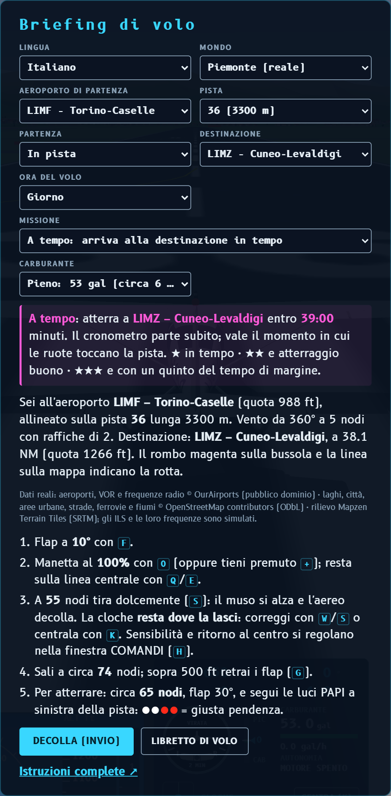
2. Comandi
Tastiera
| Tasto | Che cosa fa |
|---|---|
| W / S (o frecce ↑ ↓) | Cloche avanti (picchia, il muso scende) / indietro (cabra, il muso sale) |
| A / D (o frecce ← →) | Rollio a sinistra / a destra (alettoni) |
| K | Riporta la cloche al centro |
| Q / E | Timone a sinistra / a destra; a terra sterza il ruotino anteriore |
| + / − | Manetta: aumenta / diminuisci (tieni premuto) |
| 1 … 9, 0 | Manetta al 10 … 90%, 0 = 100% |
| F / G | Flap giù / su (Cessna 0°, 10°, 20°, 30°; C42 0°, 15°, 40°) |
| Maiusc+F | Rifornimento, fermo in un aeroporto con carburante (vedi Carburante) |
| Z / X | Trim cabra / picchia |
| B o Spazio | Freni (tieni premuto) |
| C | Cambia vista: esterna, cabina, torre |
| Tasto destro del mouse | Tieni premuto e trascina: in cabina ti guardi intorno, fuori giri attorno all'aereo. Lasciando il tasto la vista torna dritta |
| Rotellina del mouse | Zoom in cabina |
| N | Destinazione successiva |
| J · T · I · Y | Schede della colonna di destra: mappa, radio, piano di volo, missione. Premendo di nuovo lo stesso tasto la colonna si nasconde |
| M / O | Scala della mappa / nord oppure prua in alto |
| T | Radio: apre il menu delle frasi da dire alla torre (poi 1…4) |
| U | Radio COM1: sintonizza la prossima stazione vicina |
| Maiusc+T | Transponder: digita il codice di 4 cifre (vedi Comunicazioni radio) |
| V | NAV1: sintonizza la stazione VOR o ILS successiva fra quelle ricevute (la più vicina per prima) |
| L | NAV1: sintonizza l'ILS della pista di arrivo |
| , / . | Rotta CRS del VOR −1° / +1° (con Maiusc ±10°) |
| Maiusc+A | Autopilota: inserisce / stacca (vedi Autopilota) |
| Maiusc+N · L · C | Autopilota: modo NAV · modo APR (avvicinamento ILS) · sorgente del CDI (GPS o NAV1) |
| H | Apre / chiude la finestra dei comandi (intanto il volo è in pausa) |
| P / R | Pausa / ricomincia (anche la missione, da capo) |
| Esc | Chiude la finestra aperta; altrimenti torna al briefing, per cambiare aeroporto, destinazione, missione, ora o carburante (anche dal pulsante nella pausa) |
Come si muove la cloche dalla tastiera
Tenendo premuto W o S la cloche si sposta poco alla volta. Quando lasci il tasto, normalmente resta dove l'hai lasciata, come un pilota che la tiene ferma. La posizione si vede nel quadratino con il mirino del pannello in basso, a sinistra della manetta: il punto in basso significa cloche tirata.
Nella finestra COMANDI (H o il pulsante in alto a sinistra) ci sono due regolazioni, che il gioco ricorda:
- Sensibilità cloche (1–10, di serie 5): più è bassa, più i comandi sono dolci vicino al centro e più lentamente i tasti muovono la cloche. A fondo corsa resta sempre tutta l'escursione.
- La cloche torna al centro quando lasci i tasti (di serie attivo): l'aereo, che è stabile, torna da solo al volo in equilibrio. Per salire o scendere a lungo si usa allora il trim.
Mouse e gamepad
Mouse: trascina sullo schermo come se fosse una cloche; il trascinamento riparte dalla posizione attuale.
| Gamepad | Comando |
|---|---|
| Levetta sinistra | Cloche (rollio e beccheggio) |
| Terzo asse | Timone |
| Grilletti destro / sinistro (o quarto asse) | Manetta su / giù |
| Tasti dorsali destro / sinistro | Flap giù / su |
| A (primo tasto) | Freni |
| Y | Cambia vista |
| Start | Parti / pausa |
3. Lo schermo
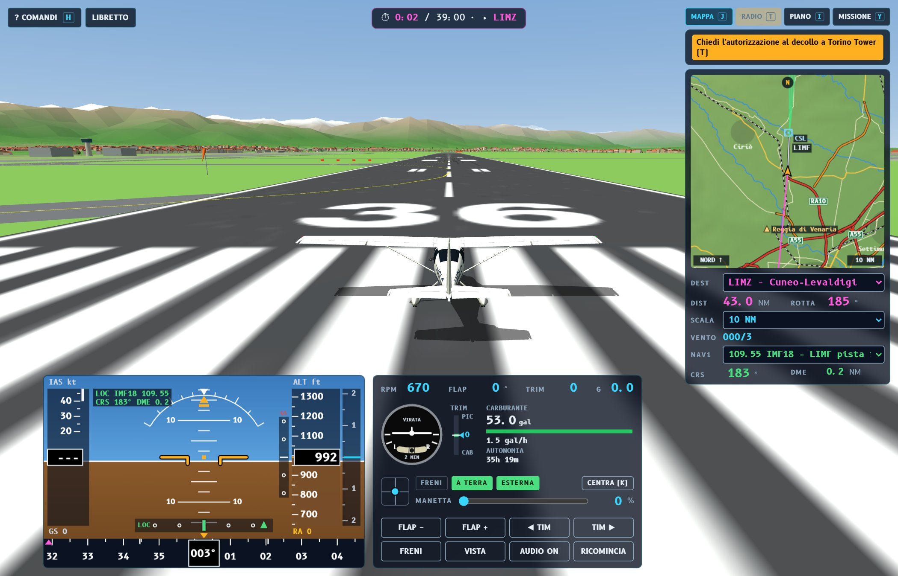
- ? COMANDI e LIBRETTO (in alto a sinistra): aprono la finestra con l'elenco dei tasti e le regolazioni della cloche (anche con H) e il libretto di volo. Mentre sono aperte il volo è in pausa.
- Obiettivo della missione (in alto al centro, solo se ne hai scelta una): cronometro, prossima tappa o punteggio.
- PFD (in basso a sinistra): lo strumento principale, con velocità, assetto, quota, variometro e bussola.
- Pannello motore e sistemi (in basso al centro): giri, flap, trim, accelerazione g, virosbandometro, carburante, cloche, manetta e pulsanti.
- Colonna a schede (in alto a destra): MAPPA (J), RADIO (T), PIANO di volo (I), AP (l'autopilota) e MISSIONE (Y). Se ne vede una alla volta, così la scena resta libera; clic sulla linguetta o il suo tasto per cambiarla, di nuovo per nascondere la colonna. Il gioco ricorda l'ultima scelta.
Quando la scheda RADIO non è aperta, sotto le linguette compaiono per qualche secondo l'ultima trasmissione e, in arancione, l'avviso su cosa dire alla torre; la linguetta RADIO lampeggia quando la torre aspetta una tua chiamata. Premendo T la radio si apre da sola e, finita la conversazione, torna la scheda di prima.
Al centro in alto compaiono i messaggi (decollo, atterraggio, radio…) e gli avvisi lampeggianti (stallo, pull up…).
4. Il PFD (Primary Flight Display)
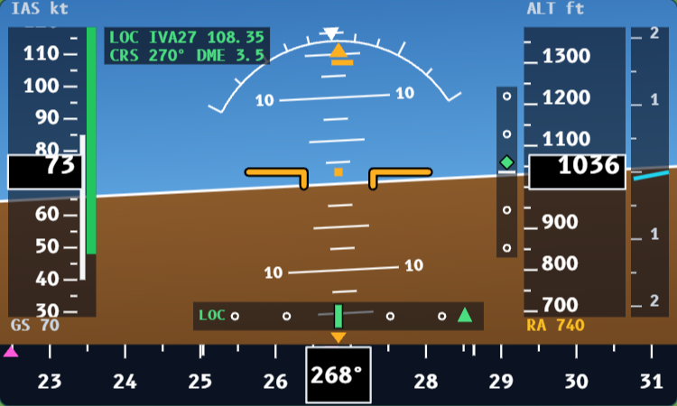
Orizzonte artificiale (al centro)
Il simbolo arancione dell'aereo resta fermo, mentre cielo e terra si muovono. Le righe orizzontali sono i gradi di beccheggio (10°, 20°…). L'arco in alto con le tacche è la scala di inclinazione (10°, 20°, 30°, 45°, 60°). Il rettangolino arancione sotto il triangolo è l'indicatore di sbandamento: se si sposta di lato, la virata non è coordinata; correggi col timone dalla parte in cui si è spostato.
Nastro della velocità (a sinistra)
Mostra la velocità rispetto all'aria (IAS) in nodi. Le fasce colorate:
- bianca (40–85 kt): velocità in cui si possono usare i flap;
- verde (48–129 kt): velocità normale;
- gialla (129–163 kt): solo con aria calma;
- rossa (oltre 163 kt): da non superare mai.
Sotto c'è la GS, la velocità rispetto al suolo, che cambia col vento.
Nastro della quota e variometro (a destra)
Quota in piedi sul livello del mare. Quando il terreno è vicino compare in marrone, con la riga arancione. Il variometro a destra mostra quanto sali o scendi, in migliaia di ft/min.
RA, il radioaltimetro (sotto la quota)
Il numero grande della quota è l'altitudine sul livello del mare: non dice quanto sei vicino al suolo, perché sotto di te può esserci la pianura a 250 m o una montagna a 2000 m. RA (radioaltimetro) invece è la tua altezza sopra il terreno che hai sotto, in piedi. Negli aerei veri lo misura un'antenna sotto la fusoliera, che manda un segnale radio verso il basso e misura quanto tempo impiega a tornare.
- sopra i 2500 ft di altezza mostra ---- (lassù non serve);
- sotto i 1000 ft diventa giallo: sei vicino al suolo (decollo, atterraggio, o troppo basso);
- sulla pista segna circa 0, perché misura l'altezza delle ruote.
Serve soprattutto in atterraggio, per capire quando fare la richiamata (RA sotto i 20–30 ft), e in montagna. Il vero Cessna 172 con G1000 non ha il radioaltimetro, che c'è sugli aerei di linea e sugli elicotteri: nel simulatore è un aiuto in più.
Bussola (in basso)
Al centro c'è la prua. Il triangolino magenta indica la direzione del prossimo punto del piano di volo. La barretta magenta che parte dal centro è il vettore di virata: dice dove sarà la prua fra 6 secondi. Le due tacche bianche corrispondono alla virata standard (3°/s).
Radionavigazione NAV1 (in verde)
Quando la radio NAV1 è sintonizzata compaiono:
- in alto a sinistra un riquadro con il tipo (VOR o LOC), la sigla, la frequenza, la rotta CRS e la distanza DME in miglia;
- in basso la scala di deviazione (CDI) con l'ago verde: l'ago mostra da che parte è la rotta, quindi si vola verso l'ago. Il triangolo a destra punta in su per TO (verso la stazione) e in giù per FROM (dalla stazione). NO significa nessun segnale;
- solo con l'ILS, una scala verticale accanto alla quota con il rombo verde del sentiero di discesa.
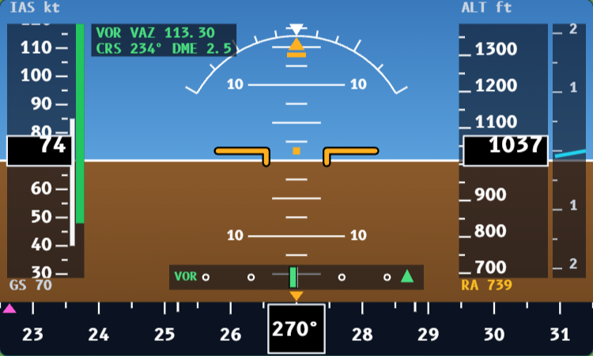
5. Motore, virosbandometro, trim, carburante
- RPM: giri del motore (2100–2700 in volo).
- FLAP: posizione dei flap in gradi.
- TRIM: posizione del trim (+ = cabra, − = picchia).
- G: accelerazione che senti: 1,0 in volo livellato, di più in virata o in richiamata.
Virosbandometro
L'aeroplanino si inclina in base a quanto velocemente cambia la prua. Quando l'ala tocca la tacca L o R stai facendo una virata standard: 3° al secondo, cioè un giro completo in 2 minuti. A 90–100 kt servono circa 15° di inclinazione.
La pallina nel tubo indica la coordinazione. Se scappa da un lato, “pesta la pallina”: un po' di timone (Q o E) dalla stessa parte.
Trim
Il trim toglie la fatica di tenere la cloche. La lancetta azzurra va in basso (CAB) per cabrare e in alto (PIC) per picchiare; la fascia verde è la posizione per il decollo.
Carburante
Mostra i galloni rimasti (1 gallone = 3,8 litri), il consumo in gal/h e l'autonomia al consumo attuale. Il consumo dipende dai giri: il Cessna brucia circa 1,5 gal/h al minimo, 8,5 a 2400 giri e 11,5 al massimo; in quota un po' meno. Il numero diventa giallo sotto il 20% del serbatoio e rosso sotto il 10%. Il C42 conta in litri.
Rifornimento. Il serbatoio non si riempie da solo quando atterri: il volo continua con quello che ti è rimasto. Per fare il pieno fermati in un aeroporto, fuori dalla pista (al parcheggio o sul piazzale), con la manetta al minimo (nella realtà a motore spento), e premi RIFORNIMENTO (compare fra i pulsanti) o Maiusc+F. Il carburante sale qualche volta più in fretta che nella realtà; premi di nuovo per fermarti prima del pieno. Non tutti gli aeroporti hanno il distributore: c'è dove lo segna OpenStreetMap, dove c'è una torre o un servizio informazioni, o una pista asfaltata di almeno 800 m; non c'è nelle aviosuperfici in erba, negli altiporti corti e negli aeroporti militari. Il piano di volo (riga CARB) ti dice quanto carburante serve per arrivare, più 30 minuti di riserva, e se a destinazione potrai rifornirti.
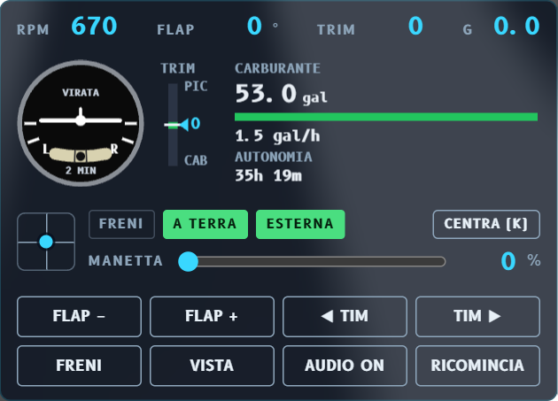
6. Mappa e radio NAV1
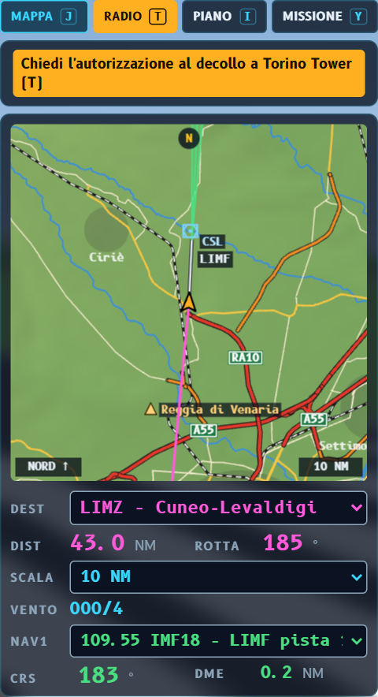
- Clic sulla mappa (o O): nord in alto oppure prua in alto.
- Rotellina sulla mappa, menu SCALA o M: da 0,5 a 100 NM o tutta la regione.
- Linea magenta: la rotta del piano di volo; quella piena va dall'aereo al prossimo punto.
- Esagoni azzurri: le stazioni VOR; con il quadrato intorno hanno anche il DME, che misura la distanza.
- Linea verde tratteggiata: la rotta CRS del VOR sintonizzato. Il ventaglio verde davanti a una pista è il fascio del localizzatore ILS sintonizzato.
Sotto la mappa ci sono:
- DEST: la destinazione (si cambia anche con N);
- DIST e ROTTA: distanza e direzione del prossimo punto;
- VENTO: da dove soffia, e quanti nodi;
- NAV1: menu per scegliere la stazione;
- CRS e DME: la rotta selezionata e la distanza dalla stazione.
7. Piano di volo
Il simulatore calcola da solo il volo fino alla destinazione:
| DEC | decollo, poi salita a 74 kt |
| SAL | salita fino alla quota di crociera |
| CRO | crociera a 100 kt sulla rotta indicata |
| DIS | discesa a 500 ft/min |
| F27… | punto di finale, 5 NM prima della pista |
| ATT | atterraggio a 65 kt con flap 30° |
La quota di crociera segue la regola dei voli a vista: 1000 ft sopra il terreno più alto lungo la rotta; verso est (rotte 000–179°) a migliaia dispari + 500 ft, verso ovest a migliaia pari + 500 ft.
Sotto ci sono i dati della pista di arrivo: lunghezza, fondo, quota del campo, altezza del circuito, vento rispetto alla pista. Se c'è, compaiono anche la frequenza dell'ILS (sintonizzalo con L) e il VOR più vicino alla destinazione. L'ultima riga cambia durante il volo e dice cosa fare adesso.
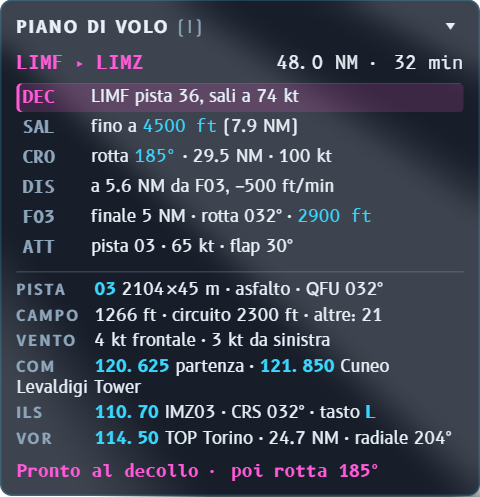
8. La cabina G1000
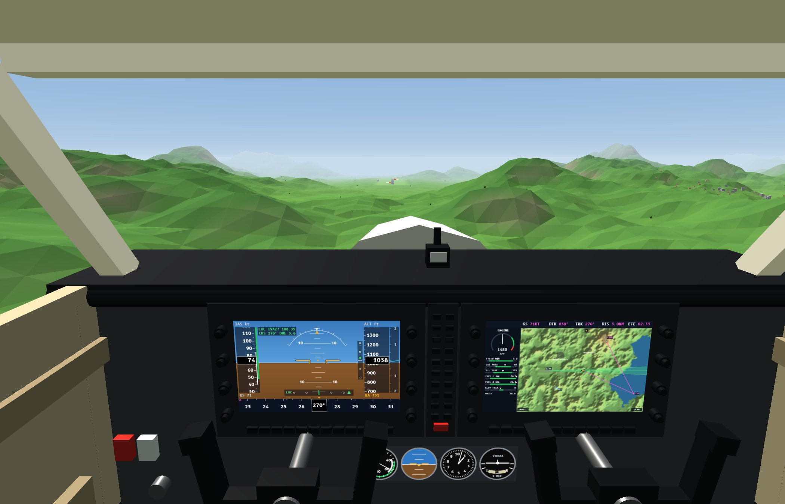
- Schermo sinistro (PFD): lo stesso PFD descritto sopra.
- Schermo destro (MFD): in alto GS, DTK (rotta voluta), TRK (rotta effettiva), DIS (distanza) ed ETE (tempo rimasto). A sinistra la colonna motore: giri, flusso carburante (FFLOW), olio, i due serbatoi (FUEL L e R) e il trim (ELEV TRIM). A destra la mappa.
- Strumenti di riserva, sotto gli schermi: anemometro, orizzonte, altimetro e virosbandometro, come sugli aerei senza schermi.
- Le cloche, la manetta, la leva dei flap e la ruota del trim si muovono con i comandi.
In cabina puoi guardarti intorno: tieni premuto il tasto destro del mouse e trascina (per esempio per vedere la pista di lato quando sei in circuito). Lasciando il tasto lo sguardo torna in avanti. Nella vista esterna lo stesso tasto fa girare la telecamera attorno all'aereo.
La terza vista, torre, guarda l'aereo dalla torre di controllo più vicina e lo segue con lo zoom: è perfetta per rivedere un atterraggio.
9. Decollo passo passo
- Flap a 10°: premi una volta F.
- Manetta al 100%: 0 (oppure tieni premuto +).
- Resta sulla linea centrale con piccoli colpi di timone, Q / E.
- A 55 nodi tira dolcemente (S) finché il muso sale di circa 8–10°: l'aereo si stacca da solo. La corsa è di circa 240 m.
- Mantieni circa 74 nodi (miglior salita, circa 570 ft/min). Se la velocità cala, abbassa un po' il muso.
- Sopra i 500 ft retrai i flap (G) e usa il trim (Z/X) per non dover tenere la cloche.
- Segui il triangolino magenta sulla bussola verso la destinazione.
Partire dal parcheggio: il rullaggio
Se nel briefing scegli Partenza: dal parcheggio, sei fermo sul piazzale con il motore al minimo. Nel mondo Piemonte, in 18 aeroporti italiani (Caselle, Malpensa, Linate, Cuneo, Aosta, Bresso, Genova…), piazzali e vie di rullaggio sono quelli veri, presi da OpenStreetMap con i loro nomi (A, B, L, G…); negli altri aeroporti c'è un piazzale semplice accanto alla pista principale. Sul terreno ci sono le linee gialle: la linea di guida, il centro del raccordo e il punto attesa (due linee piene e due tratteggiate) prima della pista. Segui la linea gialla a terra; sulla mappa (scala 0,5 NM) lo stesso percorso è disegnato in magenta.

Dove le vie di rullaggio sono vere (mondo Piemonte, 18 aeroporti): Milano-Malpensa (LIMC), Milano-Linate (LIML), Torino-Caselle (LIMF), Genova (LIMJ), Cameri (LIMN), Torino-Aeritalia (LIMA), Aosta (LIMW), Biella-Cerrione (LILE), Milano-Bresso (LIMB), Cuneo-Levaldigi (LIMZ), Varese-Venegono (LILN), Vergiate (LILG), Albenga (LIMG), Voghera-Rivanazzano (LILH), Vercelli (LILI), Alessandria (LILA), Alzate Brianza (LILB), Casale Monferrato (LILM).
I cinque grandi aeroporti — Torino-Caselle, Milano-Malpensa, Milano-Linate, Genova e Cuneo-Levaldigi — sono disegnati come quelli veri, con la sagoma di ogni edificio presa da OpenStreetMap: il terminal con la sua vetrata (a Caselle verde-acqua, a Malpensa blu, a Linate verde), gli hangar con i portoni verso il piazzale, i magazzini merci, i parcheggi multipiano, la torre di controllo (la vista dalla torre, tasto C, parte proprio da lì), i radar che girano, le torri faro bianche e rosse, i pontili d'imbarco, le piazzole con il loro numero dipinto a terra, gli aerei di linea parcheggiati con i mezzi di rampa, i parcheggi pieni di auto e la recinzione con il filo spinato. Di notte le vetrate sono illuminate e le torri faro accendono il piazzale.
A Casale Monferrato, e sulla pista 10/28 di Torino-Aeritalia, le vie disegnate in OpenStreetMap non arrivano alla pista: partendo “dal parcheggio” si parte direttamente in pista.
Dove c'è il piazzale semplice (14 aeroporti): Novi Ligure (LIMR) e Moncucco-Vische (LIVV), che in OpenStreetMap non hanno vie di rullaggio; gli aeroporti svizzeri (Lugano-Agno, Locarno, Sion, Bex, Saanen, Ambri, Raron, Sankt Stephan) e francesi (Courchevel, Megève, Barcelonnette, Mont-Dauphin), perché i dati usati coprono solo il Nord-Ovest italiano. Nel mondo inventato Valle Azzurra tutti gli aeroporti hanno il piazzale semplice.
- Chiedi di rullare alla torre: T, “request taxi”. La torre (o il Ground) risponde “taxi to holding point runway … via L, G” con le vie da seguire e il QNH: ripetilo.
- Rulla piano (sotto i 15 nodi, altrimenti compare RULLA PIÙ PIANO): un filo di manetta, sterza con Q/E, frena con B.
- Fermati al punto attesa, prima della pista, e chiama: “holding point runway …, ready for departure”.
- Se una via arriva alla testata la torre risponde “line up runway …, cleared for take-off”: entri in pista, ti allinei e decolli. Se invece la via entra a metà pista risponde “enter and backtrack runway …, line up, cleared for take-off”: entri in pista, la risali fino alla testata, ti giri e decolli.
Dopo l'atterraggio, appena rallenti, ricevi le indicazioni per il parcheggio: negli aeroporti con le vie di rullaggio vere ti viene assegnata una piazzola libera con il suo numero (nei cinque grandi aeroporti, quelli disegnati con le piazzole vere) o il piazzale, con le vie da seguire («rulla alla piazzola 202 via H, E»). La torre te lo dice anche alla radio, la mappa passa alla scala 0,5 NM e mostra il percorso in magenta da dove sei; a terra segui la linea gialla fino alla barra di arresto della piazzola. Quando sei fermo lì (o sul piazzale) il volo è concluso e puoi preparare il successivo: il percorso verso la pista partirà dalla tua piazzola. Di notte raccordo e piazzale hanno le luci blu.
10. In volo: assetto, trim, virate
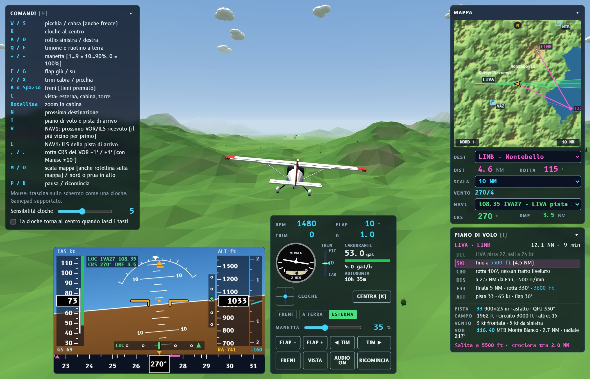
Assetto + potenza = prestazioni. Il muso decide la velocità, la manetta decide se sali o scendi. Per stare livellato a 100 kt servono circa il 65% di manetta e il muso sull'orizzonte.
- Piccole correzioni: tocchi brevi dei tasti, poi aspetta qualche secondo che l'aereo risponda. Il Cessna è stabile: se è ben trimmato, vola quasi da solo.
- Trim: quando l'aereo vola come vuoi tu, premi Z o X finché non serve più tenere la cloche, poi centrala con K.
- Virata: inclina di 15–30° con A/D, riporta gli alettoni quasi al centro e tira appena un po' per non perdere quota. Per uscire inclina dalla parte opposta. Una virata a 30° si sente: circa 1,15 g.
- Stallo: sotto circa 48 kt senza flap (40 kt con flap 30°) l'ala smette di portare. Suona il corno e compare STALLO. Abbassa subito il muso e dai motore.
Volare di notte
Scegli Notte (o Tramonto) nel briefing alla voce Ora del volo. Di notte il paesaggio è buio e ti orienti con le luci:
- le città sono tappeti di luci (ricavati dagli edifici veri): Torino, Novara, Cuneo si riconoscono da lontano;
- le piste hanno le luci bianche sui bordi, una fila verde sulla soglia e, sulle piste lunghe, le luci di avvicinamento davanti alla soglia (300 m di asse e una barra);
- il PAPI funziona come di giorno;
- l'aereo accende il faro di atterraggio, che illumina la pista davanti a te, e le luci di navigazione (rossa a sinistra, verde a destra, bianca in coda, lampeggiatore).
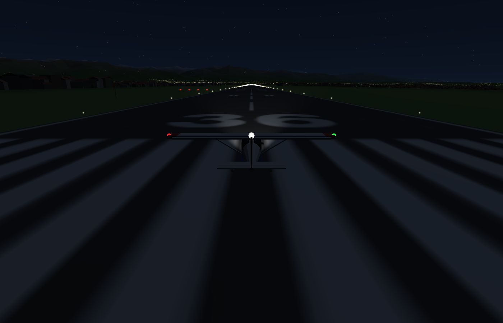
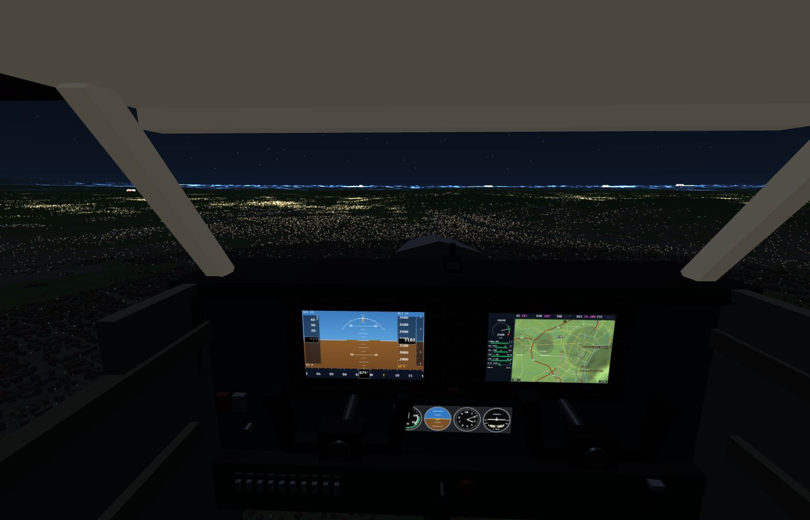
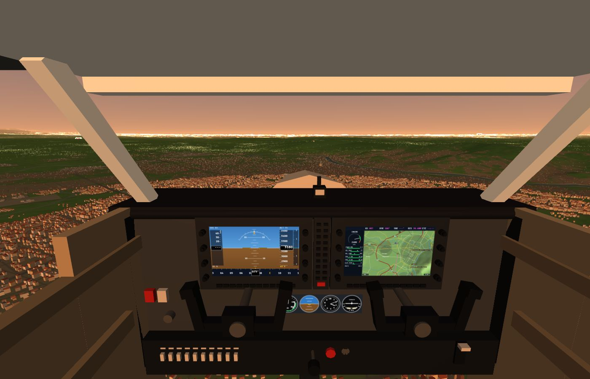
Di notte gli strumenti contano più del solito: tieni d'occhio assetto, quota e il radioaltimetro, e usa l'ILS per arrivare allineato.
11. Atterraggio e PAPI
- Arriva al punto di finale (5 NM) alla quota indicata nel piano, allineato con la pista.
- Velocità 65 nodi, flap 30° (F tre volte, sotto gli 85 kt).
- Scendi di circa 500 ft/min seguendo le luci PAPI, le quattro luci a sinistra della pista:
- due bianche e due rosse = pendenza giusta (3°);
- o tutte bianche = sei troppo alto;
- o tutte rosse = sei troppo basso: dai motore!
- A pochi metri dal suolo togli tutto il motore e richiama piano: tira la cloche per tenere il muso un po' su e lascia che l'aereo si appoggi sulle ruote principali.
- A terra frena con B o Spazio.
Il gioco giudica il contatto in base alla velocità verticale:
| Velocità verticale al contatto | Giudizio |
|---|---|
| meno di 120 ft/min | Burro! Atterraggio perfetto |
| 120–250 ft/min | Ottimo atterraggio |
| 250–450 ft/min | Buon atterraggio |
| 450–700 ft/min | Atterraggio duro |
| oltre circa 700 ft/min | Carrello distrutto |
Il messaggio dice anche a quanti metri dalla soglia e dalla linea centrale hai toccato. Il punto ideale è a circa 300 m dalla soglia.
Ripartire
Quando sei fermo, l'aeroporto dove sei atterrato diventa la partenza del volo successivo: il piano di volo viene ricalcolato (se eri arrivato a destinazione viene proposto l'aeroporto più vicino; cambialo con N o il menu DEST) e la radio ti ricorda di chiedere il decollo. Rulla fino all'inizio della pista e chiedi l'autorizzazione con T. Carburante e posizione restano quelli che hai; da quel momento R riparte da questo aeroporto.
12. Missioni e libretto di volo
Nel briefing, alla voce Missione, puoi scegliere uno scopo per il volo. Ogni missione vale da 0 a 3 stelle. In alto al centro una striscia mostra l'obiettivo e il cronometro; la scheda MISSIONE (Y) ha tutti i dettagli. R fa ricominciare la missione da capo.
A tempo
Atterra alla destinazione scelta nel briefing entro un tempo limite, calcolato dalla distanza (crociera a circa 95 nodi, più qualche minuto per decollo e atterraggio, e 4 minuti in più se parti dal parcheggio). Il cronometro parte subito e si ferma quando le ruote toccano la pista.
- ★ arrivi in tempo;
- ★★ e l'atterraggio è buono: sulla pista, sotto i 450 ft/min;
- ★★★ e ti avanza almeno un quinto del tempo.
Giro a tappe
Il giro corto ha 2 tappe, il giro lungo 3, scelte a caso fra gli aeroporti vicini; alla fine si torna a casa. Il pulsante Altro giro nel briefing ne estrae un altro. Ogni tappa vale quando tocchi la sua pista: puoi fermarti oppure fare un tocca e riparti (dai motore appena toccato), che fa risparmiare tempo. La destinazione passa da sola alla tappa successiva.
- ★ giro completo;
- ★★ e tutti gli atterraggi buoni;
- ★★★ e entro il tempo di riferimento.
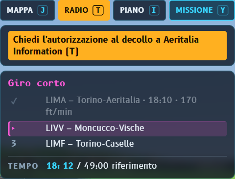
Atterraggio di precisione
Parti in finale per la pista di arrivo, come con Prova l'atterraggio. Al primo contatto il gioco dà fino a 100 punti:
| 30 | velocità verticale: pieni fino a 100 ft/min, zero da 600 |
| 30 | punto di contatto: entro 30 m dal punto di mira, all'altezza dei PAPI (300 m dopo la soglia sulle piste lunghe) |
| 20 | linea centrale: entro 1 m |
| 20 | velocità all'aria fra 45 e 62 nodi |
★ da 40 punti, ★★ da 65, ★★★ da 85. Fuori dalla pista la missione fallisce.
Quando l'aereo si ferma si apre la finestra del risultato, con il dettaglio e un consiglio per migliorare. Da lì puoi continuare a volare, riprovare (R), aprire il libretto o tornare al briefing.
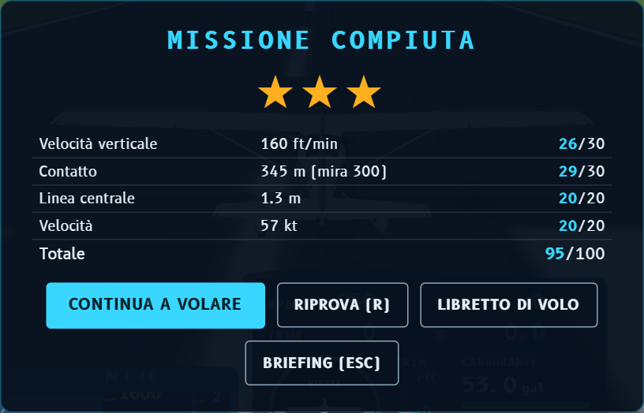
Il libretto di volo
Come quello dei piloti veri, il libretto di volo si scrive da solo: ogni volo va dal decollo a quando ti fermi dopo l'atterraggio (o all'incidente). Per ogni volo ci sono data, aeroporti di partenza e di arrivo, durata, miglia percorse, atterraggi con la velocità verticale, ora del giorno e l'eventuale missione con le stelle. In alto i totali (voli, ore, atterraggi, miglia, l'atterraggio più dolce, missioni e stelle) e i record: il punteggio migliore di precisione e i tempi migliori. Il libretto si apre dal pulsante LIBRETTO, dal briefing, dalla pausa e dalla finestra del risultato; resta nel browser, e si può svuotare.
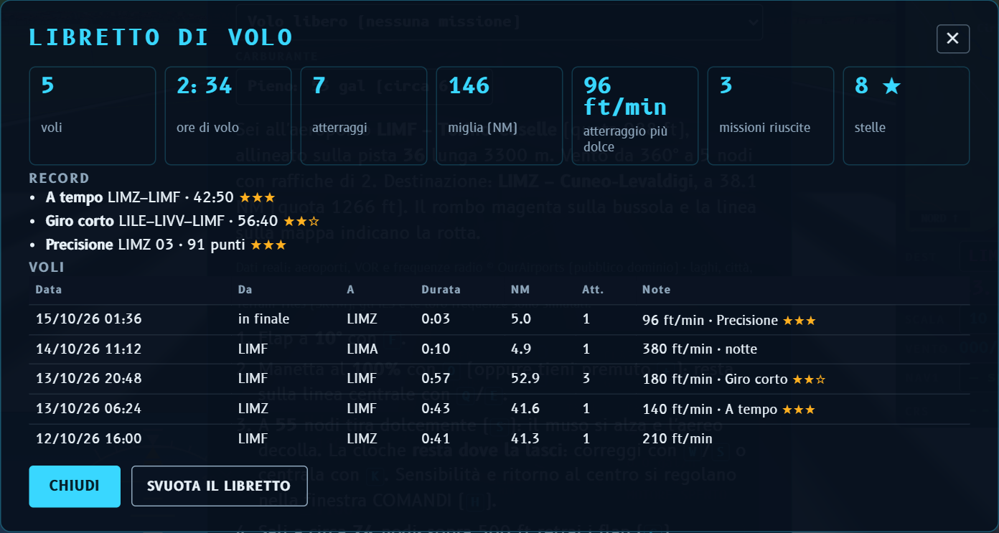
13. Autopilota
Il Cessna 172 con G1000 di oggi ha di solito l'autopilota Garmin GFC 700; quello del simulatore gli somiglia, in versione semplice. Maiusc+A (o il tasto AP nella scheda AP) lo inserisce: da quel momento tiene la prua e la quota che avevi, arrotondata ai 100 ft. Si inserisce solo in volo.
Nella scheda AP ci sono i tasti dei modi, come sul pannello del GFC 700; il modo attivo è acceso in verde. Cliccare un modo ad autopilota spento lo inserisce anche:
- AP: inserisce o stacca l'autopilota;
- NAV e APR: seguono la rotta e l'ILS (vedi sotto);
- HDG: segue la prua scelta; premuto di nuovo passa a ROL, ali livellate (l'aereo va dritto dove si trova);
- ALT: tiene la quota di adesso;
- VS: tiene la velocità verticale di adesso (arrotondata ai 100 ft/min), che poi cambi con i pulsanti VS o Maiusc+S/W, anche in negativo per scendere. Se la quota scelta è davanti a te, cioè sopra in salita o sotto in discesa, la aggancia da sola quando ci arrivi (ALTS); altrimenti continua a salire o scendere.
Con l'autopilota inserito i tasti della cloche non muovono più l'aereo, ma cambiano i valori scelti:
| A / D | prua scelta −1° / +1° (tenendo premuto corre). L'aereo vira verso di lei inclinato al massimo di 20° |
| S / W | quota scelta +100 / −100 ft (come tirare o spingere la cloche) |
| Maiusc+S / W | velocità verticale +100 / −100 ft/min (sotto zero si scende); da ALT passa in VS partendo da 0 |
| Maiusc+H | prua scelta = prua attuale |
| Maiusc+A | stacca l'autopilota |
Sul PFD, in alto, la barra dei modi dice che cosa sta facendo: AP inserito, HDG segue la prua scelta (il segno azzurro sulla bussola), ALT tiene la quota oppure VS 500 sale o scende verso la quota scelta (scritta in azzurro sopra il nastro della quota) e ALTS vuol dire che la aggancerà da solo quando ci arriva.
La manetta resta a te, come sul 172 vero. Se in salita la velocità scende verso 65 nodi, l'autopilota abbassa il muso per non perderne altra e compare VEL MIN: dai più motore. Se in discesa supera la velocità massima di crociera compare VEL MAX: togli motore.
L'autopilota muove l'equilibratore e, piano piano, il trim: quando lo stacchi l'aereo è già in equilibrio. Si stacca da solo, con tre toni discendenti, se prendi la cloche col mouse o col gamepad, in caso di stallo o se l'assetto esce dai limiti.
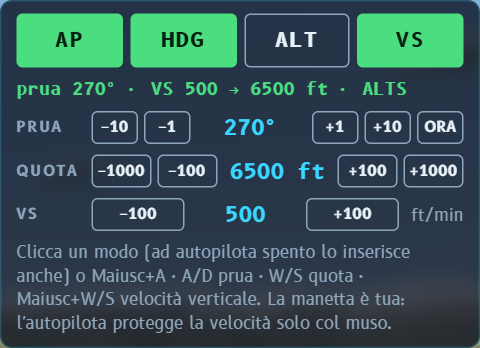
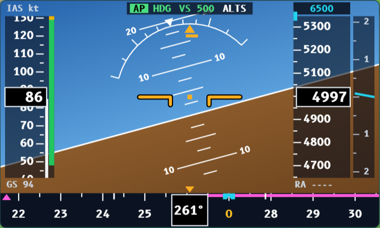
Navigare con l'autopilota: CDI, NAV e APR
Come sul G1000, il tasto CDI (nella scheda AP, o Maiusc+C) sceglie la sorgente della navigazione: GPS, la rotta magenta del piano di volo, oppure NAV1, il VOR o l'ILS sintonizzato (VOR1 o LOC1). Sul PFD l'ago di deviazione è magenta col GPS e verde con NAV1; col GPS il riquadro in alto mostra il prossimo punto, la rotta voluta DTK e la distanza, e la scala è di 2 NM (ENR) o 1 NM sul tratto finale (TERM). Sintonizzare NAV1 (V, L o il menu) porta il CDI su NAV1; spegnerlo lo riporta sul GPS.
- NAV (Maiusc+N): segue la sorgente del CDI, cioè la rotta GPS o la radiale del VOR con la rotta CRS che hai scelto. Se l'ago è a fondo scala NAV resta armato (bianco): intanto vola in HDG verso la rotta e la aggancia da solo quando l'ago comincia a muoversi (diventa verde). Insegue la traccia al suolo, quindi corregge da solo il vento.
- APR (Maiusc+L): avvicinamento ILS. Serve l'ILS sintonizzato (L); il CDI passa su LOC1. Arma LOC e GS: di solito si arriva in HDG e in ALT, il LOC si aggancia e l'aereo si allinea con la pista; quando il sentiero di 3° scende fino all'aereo si aggancia il GS e comincia la discesa. Tieni la velocità con la manetta (70–90 nodi) e abbassa i flap.
- Minimi: il 172 non atterra da solo. A 200 ft sopra la pista lampeggia MINIMI con un segnale acustico: stacca l'autopilota (Maiusc+A), togli motore e atterra a mano.
- Cambiare la sorgente del CDI mentre sei in NAV o APR fa passare l'autopilota in ROL (ali livellate), come sull'aereo vero: poi ripremi NAV o APR. Se il segnale si perde succede la stessa cosa.
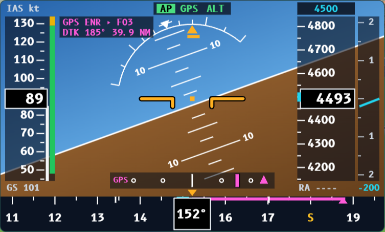
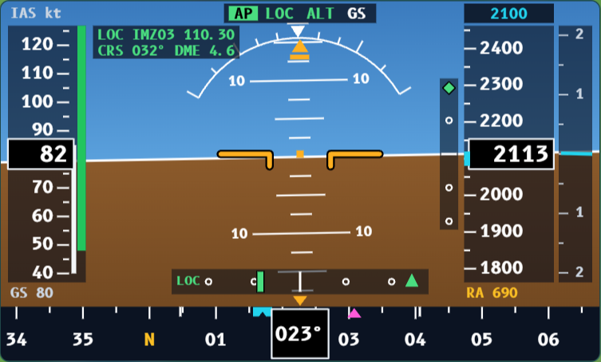
14. Navigare con il VOR
Il VOR è una stazione radio a terra che trasmette in tutte le direzioni. Il ricevitore di bordo capisce su quale radiale ti trovi, cioè in che direzione sei visto dalla stazione: sul radiale 090 sei a est della stazione. Se la stazione ha il DME, sai anche a quante miglia sei.
- Sintonizza: premi V (più volte per passare alle altre stazioni ricevute) oppure scegli dal menu NAV1. La rotta CRS viene impostata dritta verso la stazione.
- Scegli la rotta con , e . (con Maiusc di 10° in 10°).
- Leggi l'ago: se è a destra, la rotta è alla tua destra. Gira di 20–30° verso l'ago per intercettarla, poi quando l'ago si centra metti la prua sulla rotta CRS.
- TO / FROM: con TO la rotta ti porta verso la stazione, con FROM te ne allontana. Quando sorvoli la stazione passa da TO a FROM.
- Col vento al traverso, tieni la prua qualche grado verso il vento per restare sulla rotta.
La radio si riceve solo entro una certa distanza, e più sei in alto più lontano arriva (il segnale viaggia in linea retta, come la luce). Se compare FUORI PORTATA, sali di quota o avvicinati.
Nel mondo Piemonte i VOR sono quelli veri, per esempio TOP Torino 114.50, CSL Caselle 116.75, VOG Voghera 115.50, SRN Saronno 113.70 e BLA Biella 116.10. Una differenza dalla realtà: il simulatore usa i gradi riferiti al nord geografico, mentre i VOR veri usano il nord magnetico, che in Piemonte è circa 3° più a est.
15. Avvicinamento ILS
L'ILS guida fino alla pista con due fasci radio:
- il localizzatore (LOC) dice se sei a destra o a sinistra dell'asse pista. È molto più preciso del VOR: l'ago va a fondo scala quando sei 2,5° fuori asse;
- il sentiero di discesa (glide slope) dice se sei sopra o sotto la pendenza di 3°. Fondo scala: 0,7°.
- Premi L per sintonizzare l'ILS della pista di arrivo; la frequenza è anche nel piano di volo.
- Avvicinati al prolungamento della pista con un angolo di 30° circa, a 2000–2500 ft sopra il campo, verso il punto di finale.
- Quando l'ago LOC si muove verso il centro, vira sulla rotta della pista (CRS). Da qui correzioni piccole, di pochi gradi.
- Quando il rombo del sentiero scende verso il centro, metti flap e motore per scendere di circa 400–500 ft/min a 65 kt.
- Rombo sopra il centro = sei basso, scendi meno. Rombo sotto il centro = sei alto, scendi di più.
- Sulla soglia sarai a circa 50 ft: guarda fuori, richiama e atterra.
16. Comunicazioni radio con la torre
Le comunicazioni sono in inglese, con la fraseologia standard internazionale (ICAO), come nella realtà. La torre parla con una voce sintetica del browser; tu non devi parlare: premi T, scegli la frase con 1…4 e il gioco la pronuncia con la voce del pilota. Nella scheda RADIO (T la apre da sola) ogni trasmissione resta scritta, con la traduzione italiana sotto.
- Il tuo nominativo è I-VOLO (si dice “India Victor Oscar Lima Oscar”). Dopo la prima chiamata la torre usa quello abbreviato, I-LO.
- I numeri si dicono cifra per cifra: pista 27 = “runway two seven”, QNH 1016 = “Q N H one zero one six”, e il 9 è “niner”.
- Quando la torre ti dà un'autorizzazione devi ripeterla (readback). Tra le risposte ce n'è a volte una sbagliata, con la pista, il QNH o il codice del transponder diversi: se la scegli, la torre ti corregge. Ascolta bene!
- Quando la torre ti chiama, la linguetta RADIO lampeggia e compare un avviso arancione. Se non rispondi, dopo un po' la torre richiama.
- Mentre qualcuno sta trasmettendo non si parla: aspetta la fine e poi premi T.
Un volo tipico
| Quando | Chi | Cosa si dice |
|---|---|---|
| Al parcheggio (se parti da lì) | Tu | chiedi di rullare a Terra (“Ground”) o alla torre: “… at the apron, request taxi” |
| Terra | “taxi to holding point runway … via …”, QNH e, se c'è il Ground, “at holding point contact … Tower” con la frequenza; tu ripeti | |
| Al punto attesa | Tu | sulla frequenza della torre: “holding point runway …, ready for departure”; la torre risponde “line up…” (o “enter and backtrack…” se la via entra a metà pista), “cleared for take-off” |
| Sulla pista, prima di partire (partenza in pista) | Tu | chiedi di partire: “… ready for departure” |
| Torre | pista, vento, QNH e “cleared for take-off” (autorizzato al decollo); tu ripeti | |
| A 5 NM dall'aeroporto | Torre | “leaving the control zone, frequency change approved” (stai lasciando la zona di controllo); tu saluti |
| A 20 NM dalla destinazione | Tu | chiami la torre di arrivo: posizione, quota, “inbound for landing”, oppure chiedi l'ILS |
| Torre | avvicinamento diretto, circuito di traffico o “cleared ILS approach”, con QNH; poi “report final” | |
| In finale | Tu | “final runway …” |
| Torre | vento e “cleared to land” (autorizzato all'atterraggio); tu ripeti | |
| Dopo l'atterraggio | Torre | “vacate the runway” (libera la pista), “taxi to stand…” (piazzola e vie) e benvenuto |
Sintonizzare la radio (COM1)
Ogni aeroporto ha la sua frequenza, scritta nel piano di volo (riga COM: partenza e arrivo) e nel menu COM1 della scheda RADIO. Prima di chiamare una stazione devi sintonizzare la sua frequenza: dal menu COM1 oppure con il tasto U, che passa alle stazioni più vicine una dopo l'altra. Se chiami sulla frequenza sbagliata nessuno risponde, come nella realtà, e la radio ti dice quale frequenza serve. Quando lasci la zona di controllo, la torre ti dice anche la frequenza della stazione di arrivo: ripetila e poi impostala.
Se non vuoi pensare alle frequenze, spunta Sintonia automatica: il gioco imposta da solo la frequenza giusta quando chiami (puoi comunque cambiarla a mano). Il MAYDAY riceve sempre risposta, qualunque sia la frequenza, perché nella realtà c'è una frequenza di emergenza (121.5) sempre ascoltata.
Il transponder
Il transponder risponde al radar del controllore con un codice di 4 cifre (solo da 0 a 7) e, nel modo ALT, anche con la quota. Lo trovi nella scheda RADIO (riga XPDR), in basso a destra sul PFD del Cessna e sulla radio nella cabina del C42.
- Cambiare il codice: premi Maiusc+T (oppure fai clic sul codice) e digita le 4 cifre; mentre digiti, i numeri non muovono la manetta. Esc annulla.
- Modi: STBY = acceso ma non risponde (a terra, al parcheggio); ON = risponde solo con il codice; ALT = codice e quota, si usa in volo (si inserisce prima di entrare in pista). IDENT fa “lampeggiare” il tuo aereo sul radar: si preme solo quando il controllore lo chiede.
- 7000 è il codice per il volo a vista (VFR) in Italia: è quello con cui parti. Le torri ti assegnano un codice (“squawk 4521”) quando ti autorizzano al rullaggio o al decollo e quando arrivi; va ripetuto nel readback e impostato. Uscendo dalla zona di controllo la torre ti rimette sul 7000.
- Se non imposti il codice, dopo una trentina di secondi la torre ti chiede di verificarlo (“check squawk”); se sei in volo vicino al campo senza il modo ALT, te lo ricorda (“squawk mode Charlie”).
- In emergenza si mette il 7700: dopo il MAYDAY la torre te lo chiede, se non l'hai già fatto.
Come funziona, in breve
Il radar “primario” vede solo un'eco, senza sapere chi sei. Il radar “secondario” invece interroga il transponder, che risponde con il suo codice (e la quota): così sullo schermo del controllore accanto al tuo puntino compaiono il codice, la quota e, con i transponder moderni, il nominativo. Il codice è un numero ottale: ogni cifra va da 0 a 7, quindi le combinazioni sono 8 × 8 × 8 × 8 = 4096. Per questo l'8 e il 9 non si possono digitare.
| Modo | Cosa trasmette | Quando si usa |
|---|---|---|
| STBY | niente: è acceso e scaldato, ma non risponde | al parcheggio e a terra; così non si riempiono di echi il radar e gli strumenti anticollisione (TCAS) degli altri aerei |
| ON | solo il codice (“modo A”) | quasi mai: solo se il controllore chiede di togliere la quota perché è sbagliata |
| ALT | codice e quota (“modo C”); i transponder “modo S”, come quelli del Cessna e del C42, mandano anche il nominativo | in volo, sempre: si inserisce prima di entrare in pista per il decollo |
| IDENT | per circa 18 secondi il tuo puntino si evidenzia sul radar, poi torna normale da solo | solo quando il controllore lo chiede (“squawk ident”), per riconoscerti fra gli altri |
In un volo tipico: STBY al parcheggio e durante il rullaggio, ALT quando entri in pista, il codice che ti dà la torre finché sei con lei, di nuovo 7000 quando lasci la zona di controllo, il codice dell'arrivo quando chiami la torre di destinazione, STBY dopo aver liberato la pista. (In alcuni grandi aeroporti, se lo dicono le procedure, il transponder resta acceso anche durante il rullaggio, perché lì c'è un radar per le vie a terra.)
- 7000: volo a vista (VFR) senza un codice assegnato, in Italia e in quasi tutta Europa (negli Stati Uniti è 1200).
- 7700: emergenza. Sul radar di tutti i controllori l'aereo diventa subito evidenziato. Nel gioco si usa con il MAYDAY.
- 7600: guasto alla radio (non si riesce più a parlare con la torre).
- 7500: interferenza illecita (dirottamento). Non si usa mai per gioco: nella realtà fa scattare l'allarme.
Se decolli o atterri senza autorizzazione, la torre se ne accorge e te lo dice. Se ti si spegne il motore puoi dichiarare emergenza con il MAYDAY: la torre ti indica l'aeroporto più vicino, la prua e la distanza.
Nel mondo Piemonte stazioni e frequenze sono quelle vere (da OurAirports): per esempio Torino Ground 121.705 e Torino Tower 118.500 a Caselle, Malpensa Tower 119.000, Cuneo Information 119.550, Bresso Radio 122.005. Le torri (“Tower”) danno le autorizzazioni; i servizi Information (AFIS) e Radio danno solo informazioni (pista in uso, vento, traffico) e lasciano a te la decisione. Dove c'è la frequenza di terra (“Ground”), partendo dal parcheggio il rullaggio si chiede a Terra, che al punto attesa ti passa alla torre. La frequenza sintonizzata è scritta in alto nella scheda RADIO (COM1).
17. Avvisi ed emergenze
| Avviso | Cosa significa | Cosa fare |
|---|---|---|
| PULL UP | Stai per toccare il terreno scendendo | Tira e dai tutto motore |
| STALLO | Ala vicina allo stallo (suona il corno) | Muso giù, motore |
| VELOCITÀ ECCESSIVA | Oltre 163 kt | Togli motore, muso su piano |
| VELOCITÀ FLAP | Flap estesi oltre 85 kt | Rallenta o ritira i flap |
| SOVRACCARICO | Accelerazione oltre 3,8 g | Manovre più dolci |
| CARBURANTE BASSO | Meno di 5 galloni | Atterra al più presto |
| MOTORE SPENTO | Carburante finito | Plana a 65 kt verso un campo |
Motore spento
Senza carburante il motore si ferma e l'elica gira solo per il vento. Tieni subito 65 nodi, la velocità di miglior planata: scendendo di circa 800 ft/min il Cessna percorre circa 2,5 km (1,4 NM) per ogni 1000 ft di quota. Cerca una pista o un campo controvento e atterra con i flap solo quando sei sicuro di arrivarci.
Incidenti
Si ha un incidente toccando terra a più di circa 700 ft/min, finendo in acqua, toccando il suolo con un'ala, l'elica o la fusoliera, superando circa 183 kt oppure i limiti di +5,7 / −2,3 g. Premi R o Invio per ricominciare.
18. Numeri del Cessna 172
| Velocità | Nodi | Significato |
|---|---|---|
| Vso | 40 | stallo con flap 30° |
| Vs1 | 48 | stallo senza flap |
| Vr | 55 | rotazione (alzare il muso in decollo) |
| Avvicinamento | 65 | finale con flap 30°; anche miglior planata |
| Vy | 74 | miglior salita |
| Vfe | 85 | massima con flap estesi |
| Crociera | 100–110 | al 65–75% di manetta |
| Vno | 129 | massima con aria turbolenta |
| Vne | 163 | da non superare mai |
Altri dati: 1000 kg con pilota e carburante, ala di 11 m, serbatoi da 53 galloni utilizzabili. Il modello di volo (6 gradi di libertà) usa i coefficienti aerodinamici del vero C172: si possono leggere e modificare in dati/c172.js.
19. L'ultraleggero Ikarus C42
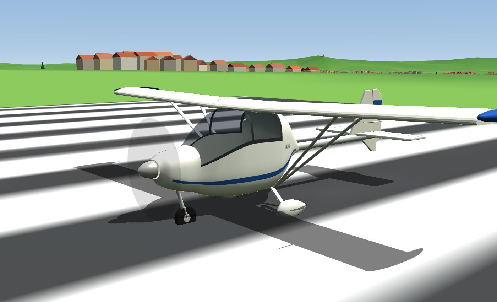
Nel briefing, alla voce Aereo, al posto del Cessna puoi scegliere l'Ikarus C42 (Comco Ikarus, Germania): un ultraleggero biposto molto usato nelle scuole di volo VDS. Il gioco lo riproduce com'è di serie: c'è solo quello che ha l'aereo vero.
- Cruscotto analogico, niente G1000 e niente orizzonte artificiale: bussola magnetica, anemometro in nodi con gli archi colorati, altimetro, variometro, contagiri digitale, pallina e i tre strumenti del motore Rotax (temperatura e pressione dell'olio, temperatura delle teste).
- Niente autopilota e niente ricevitore NAV1 (VOR e ILS): si pilota a mano e si naviga guardando fuori. Se premi Maiusc+A o V il gioco te lo ricorda. La radio COM e il transponder invece ci sono: con la torre si parla come con il Cessna.
- La mappa a destra è quella del tablet o del GPS portatile che i piloti di ultraleggero si portano in cabina.
- Solo di giorno: in Italia gli ultraleggeri volano dall'alba al tramonto, quindi nel briefing la notte non si può scegliere.
- Carburante in litri: serbatoio da 65 litri di benzina auto, circa 12,5 litri all'ora in crociera a 4500 giri. Il consumo dipende dai giri del motore (più giri, molta più benzina) e cala un po' in quota.
- In cabina: una sola cloche al centro, fra i due posti, con la leva del freno; manetta fra i sedili; leva dei flap sul tetto; trim elettrico con un pulsante e un indicatore.
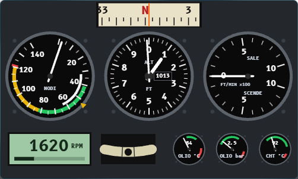
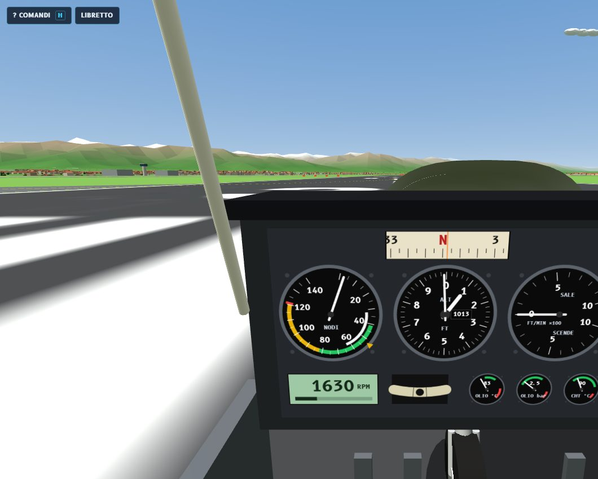
Come si pilota (dal manuale di volo del C42)
- Decollo: flap a 15° (F una volta), manetta al 100%. Il ruotino si alza verso 26 nodi: a 35 nodi tira dolcemente e l'aereo si stacca verso 38 nodi. Da fermo il motore fa circa 5000 giri.
- Salita a 60 nodi con i flap a 15° (circa 700 ft/min). Fra 150 e 200 ft retrai i flap (G).
- Crociera: 4500 giri, circa 83–88 nodi. Il massimo continuo è 5500 giri: oltre, il contagiri diventa giallo.
- Atterraggio: in finale a 55 nodi con i flap tutti giù (40°, F due volte). Con più di 10 nodi di vento al traverso usa solo i flap a 15° e tieni 58 nodi.
- Motore piantato: plana a 58 nodi; l'efficienza è 11, cioè da 1000 ft fai circa 1,8 NM.
| Velocità | Nodi | Significato |
|---|---|---|
| Vso | 32 | stallo con flap 40° |
| Vs | 36 | stallo con flap 15° |
| Vs1 | 41 | stallo senza flap |
| Vr | 35 | rotazione (alzare il muso in decollo) |
| Vx | 48 | miglior angolo di salita (flap 15°) |
| Avvicinamento | 55 | finale con flap 40° (minimo 52) |
| Vy | 60 | miglior rateo di salita (flap 15°) |
| Vfe | 63 | massima con i flap |
| VA | 82 | massima con aria turbolenta (fine dell'arco verde) |
| Crociera | 83–90 | 4500 giri |
| Vne | 121 | da non superare mai |
Altri dati: 450 kg al decollo, ala di 9,45 m (12,5 m²), motore Rotax 912 da 80 CV (5800 giri al massimo per 5 minuti, 5500 continui), elica tripala da 1,7 m. I numeri vengono dal manuale di volo del C42 e si possono leggere e modificare in dati/c42.js.
20. Mondi e mappa modificabile
- Piemonte: il rilievo vero (griglia di 250 m), 32 aeroporti con le piste vere, laghi, città, strade, ferrovie, fiumi, paesi con gli edifici e i VOR veri. Copre il Piemonte con un po' di Lombardia, Liguria, Valle d'Aosta, Svizzera e Francia (circa 219 × 287 km). Ci sono anche i principali monumenti, come riferimenti a vista: la Mole Antonelliana, Superga, il Lingotto con la pista sul tetto, i due grattacieli di Torino, la Reggia di Venaria, Stupinigi, la Sacra di San Michele, Vicoforte, San Gaudenzio a Novara, Oropa e il campanile di San Maurizio Canavese (62 m, vicino a Caselle). Sono modelli semplificati e sulla mappa sono segnati con un triangolo dorato.
- Valle Azzurra: un mondo inventato, piccolo e semplice. Tutto è nel file
dati/mappa.js, scritto per essere modificato a mano: montagne, laghi, aeroporti e piste, città, boschi, VOR, meteo e punto di partenza.
I monumenti
Visti dalla cabina, come appaiono nel gioco.
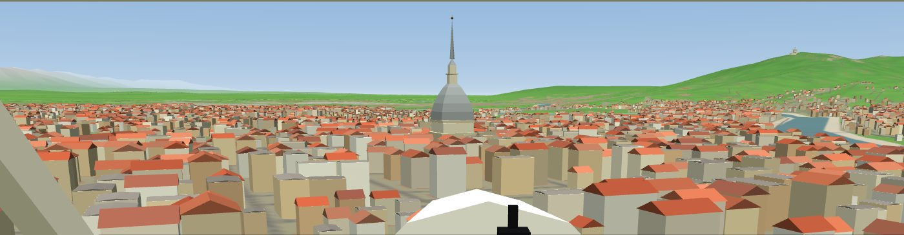
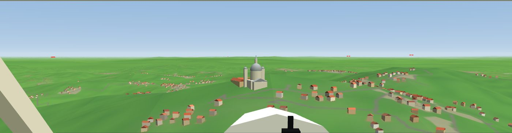
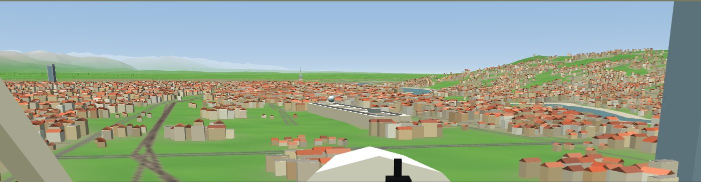
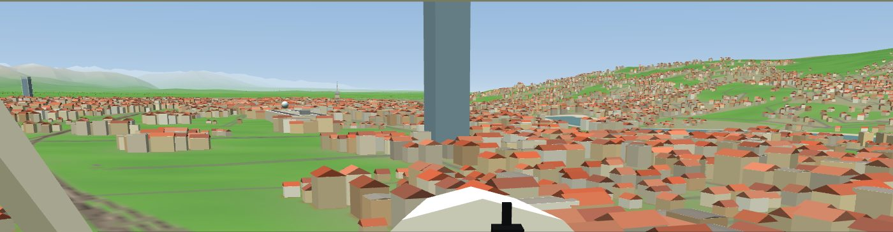
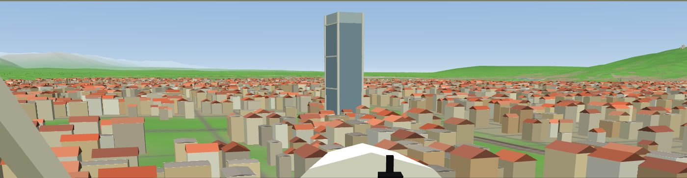
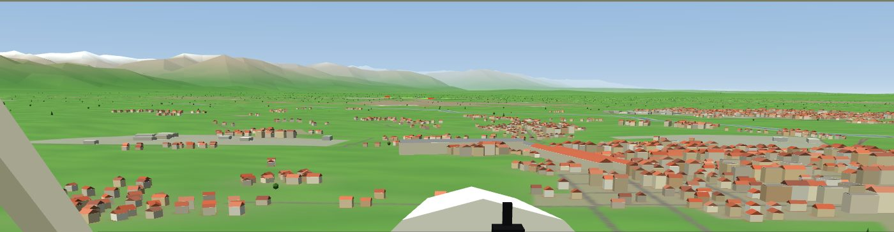
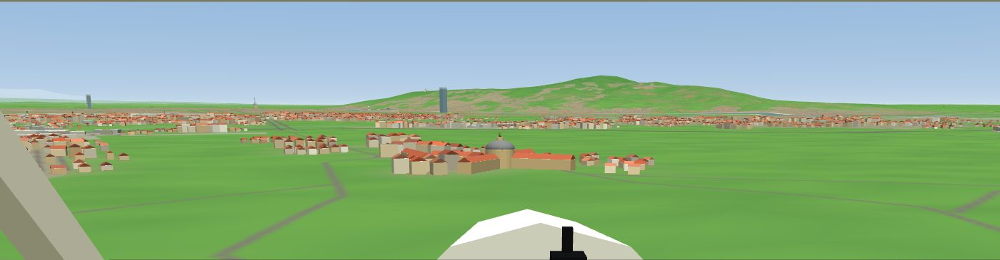
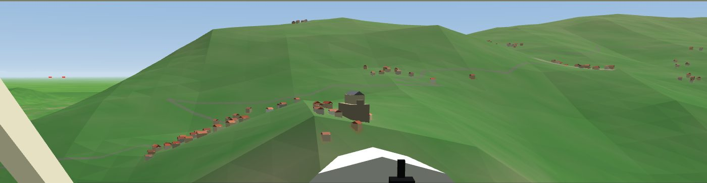
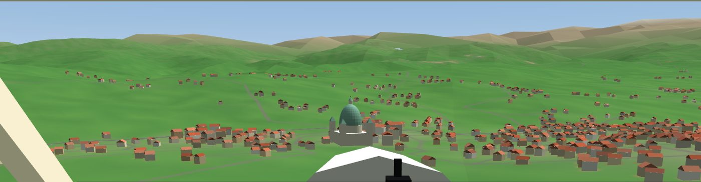
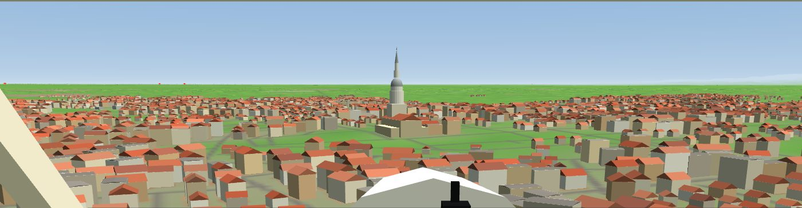
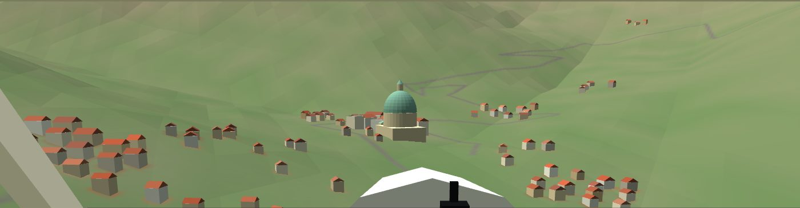
Scorciatoie da aggiungere all'indirizzo della pagina: ?lang=it o ?lang=en scelgono la lingua; ?mappa=valle o ?mappa=piemonte scelgono il mondo; #salta salta il briefing, #finale parte in finale, #vista=1 parte dalla cabina.